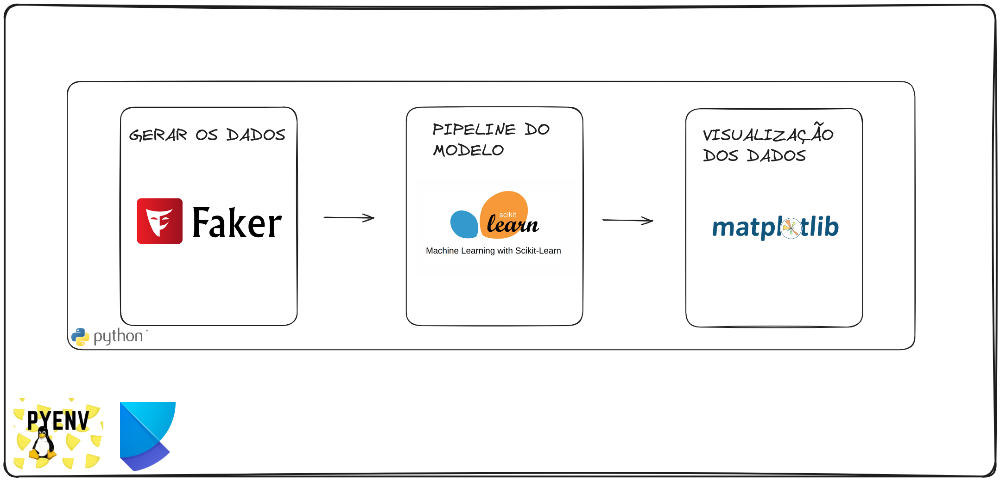

Resumo do Projeto de Predição de Preços de Barcos

Este projeto envolve o desenvolvimento de um pipeline de machine learning para a predição de preços de barcos com base em diferentes características. O projeto abrange desde a geração dos datasets, passando pelo treinamento e avaliação do modelo, até a visualização dos resultados. A seguir, são descritas as principais etapas e componentes do projeto.
Estrutura do Projeto
- Geração de Dados
- Utiliza a biblioteca Faker para gerar datasets fictícios que simulam características de barcos, como material, tipo de venda, tipo de barco, comprimento, largura, peso e preço.
-
Os dados são divididos em conjuntos de treino e teste, conforme especificado nas configurações.
-
Pré-processamento e Treinamento
- Os dados gerados são pré-processados para serem utilizados no treinamento do modelo.
- Um modelo de regressão baseado em árvore de decisão é treinado utilizando
GridSearchCVpara otimização dos hiperparâmetros. -
O modelo treinado é salvo para uso posterior.
-
Avaliação do Modelo
- O modelo é avaliado usando métricas como Mean Absolute Error (MAE), Mean Squared Error (MSE), e R².
-
As métricas de desempenho são registradas para análise.
-
Visualização
- Gráficos são gerados para visualizar a relação entre os valores reais e preditos, a distribuição dos resíduos, e a importância das features.
Configurações
As principais configurações do projeto são gerenciadas por meio de um arquivo config.yaml, que permite fácil modificação dos parâmetros de geração de dados, caminhos para salvar o modelo, e configurações de logging. Isso inclui:
- Número de amostras e tamanho do conjunto de teste.
- Caminho para salvar o modelo treinado.
- Arquivo de log para registrar as atividades do pipeline.
Objetivos do Projeto
- Desenvolver um pipeline automatizado para predição de preços de barcos.
- Garantir reprodutibilidade através do uso de
random_stateem operações aleatórias. - Facilitar a análise do modelo através de visualizações intuitivas.
Principais Tecnologias Utilizadas
- Python: Linguagem principal do projeto.
- Scikit-learn: Utilizada para o pré-processamento dos dados, treinamento do modelo e avaliação.
- Faker: Para geração de dados sintéticos.
- Matplotlib e Seaborn: Para visualização dos resultados.
- YAML: Para gestão das configurações do projeto.
Conclusão
Este projeto fornece uma abordagem completa para desenvolver um modelo de machine learning capaz de prever preços de barcos, desde a criação de datasets sintéticos até a avaliação e visualização dos resultados. A modularidade e a configuração flexível tornam o pipeline fácil de adaptar para outros problemas de regressão.